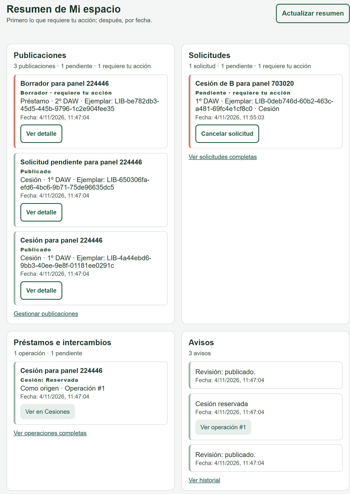
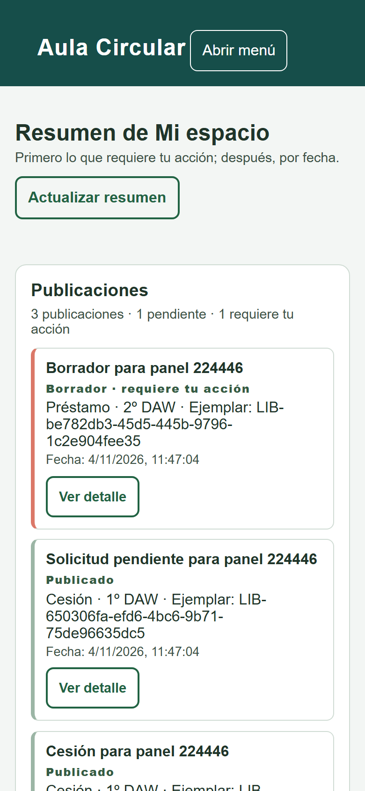

Muestra de evidencia técnica. No sustituye la ficha de tarea ni la validación del Team Leader.
| Documento | Evidencia local · Mi espacio · versión 1 |
|---|---|
| Fecha | 4 de noviembre de 2026 |
| Versión del repositorio | 8884522 · rama interfaz-y-accesibilidad |
| Entorno observado | Windows, Node.js 26.12.0, PostgreSQL 18.6, Chrome 152 headless; servidor local http://127.0.0.1:3000. La instancia local no coincide con el stack documentado de Node 24 LTS y PostgreSQL 17. |
| Datos | Cuentas, cursos, ejemplares y avisos ficticios. No se incluyen correos, cookies, tokens ni contraseñas. |
La página Mi espacio consulta al servidor con la sesión y muestra cuatro secciones propias. El propietario se toma de req.usuario.id; la ruta no acepta un identificador de usuario en la consulta.
| Sección | Total cuenta A | Pendientes A | Requieren acción A | Total cuenta B |
|---|---|---|---|---|
| Publicaciones | 3 | 1 | 1 | 1 |
| Solicitudes | 1 | 1 | 1 | 2 |
| Préstamos e intercambios | 1 | 1 | 0 | 1 |
| Avisos | 3 | 0 | 0 | 2 |
Cuenta A: Estudiante Evidencia (ficticia). Cuenta B: Estudiante B (ficticia). Los totales salen de GET /api/mi-espacio/panel.
| Caso | Entrada | Esperado | Observado |
|---|---|---|---|
| Propiedad por sesión | GET /api/mi-espacio/panel con A y con B | Solo datos propios | A: publicaciones 9, 8, 7; solicitud 3. B: publicación 10; solicitudes 2, 1. A no recibe la publicación 10 y B no recibe las publicaciones de A. |
| Sin selector de propietario | GET /api/mi-espacio/panel?usuarioId=3 con A | Rechazo; no elegir al usuario 3 | HTTP 422 · PARAMETROS_INVALIDOS |
| Límite y totales | GET /api/mi-espacio/panel?limite=1 con A | Como máximo un elemento por sección; totales completos | HTTP 200; longitudes publicaciones=1, solicitudes=1, prestamos=1, avisos=1; totales sin recortar. |
| Orden por acción y fecha | GET /api/mi-espacio/panel con A | Primero lo que requiere acción; después, fecha descendente | Primera publicación: Borrador para panel 224446 (borrador, acción=true). Primera solicitud: Cesión de B para panel 703020 (pendiente). Primera operación: #1 (reservada). |
| Prueba automática de Mi espacio | npm.cmd test | Suite completa en verde | 23/23; incluye propiedad, orden, sesión y rechazo de identificadores de propietario. |
Las peticiones HTTP y el estado SQL se conservan en evidencias/. No se ha modificado ningún dato real: todo el ensayo usa cuentas ficticias.
Captura real de la página servida en http://127.0.0.1:3000/html/mi-espacio.html con la cuenta ficticia A. La vista muestra las cuatro secciones y el orden pendiente/fecha.

La captura incluye identificadores y títulos de ensayo. No incluye correo, contraseña, cookie ni token de sesión.
Se ejecutó la suite completa contra PostgreSQL local y HTTP real. Extracto literal de la salida:
La salida completa está en evidencias/pruebas.txt. Los tests crean esquemas aislados aula_test_* y los eliminan al terminar; no son respuestas simuladas.
version ------------------------------------------------------------------------- PostgreSQL 18.6 on x86_64-windows, compiled by msvc-19.44.35229, 64-bit (1 fila) id | alias | publicaciones | solicitudes | operaciones | avisos ----+----------------------+---------------+-------------+-------------+-------- 2 | Estudiante Evidencia | 3 | 1 | 1 | 3 (1 fila)
usuarioId y parámetros equivalentes no eligen propietario.
| Implementación y pruebas | Realizadas en esta sesión de trabajo con asistencia de IA. La aportación individual debe ser declarada por la persona responsable. |
|---|---|
| Ayuda de IA | Sí: implementación, pruebas y redacción del borrador de evidencia. Revisión humana pendiente. |
| Revisión real | Pendiente del Team Leader. Este PDF no valida la tarea ni sustituye la ficha. |
| Fuente | src/miespacio.mjs, public/mjs/mi-espacio.mjs, public/html/mi-espacio.html, pruebas/cesiones.test.mjs, docs/CESIONES.md y salidas locales de evidencias/. |